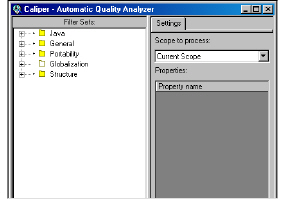

To launch a stored Caliper session
1 Do one of the following:
• Select Tools > Caliper.
• Click .
The DIScover Caliper window appears, and two options are added to the model browser main menu, Session and Action.

2 Do one of the following:
• Select Session > Open Session.
• Click .
The Open QA session dialog box appears.
3 From the Session name list, choose a stored session to open.
4 Click OK.
DIScover launches your stored Caliper analysis.
Note: This method is also appropriate when opening a Caliper session that you have previously saved to your desktop.
Alternatively, you can launch Caliper and begin a new analysis on your own just by using the Tools > Caliper menu.